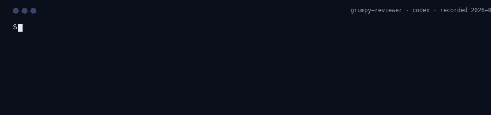

Your agent writes fast.
The Grump reads first.
The staff engineer who has rejected 4,000 pull requests, inside your coding agent. Ten questions, one verdict, and a hook that denies the write when the answer is BLOCK. Fourteen agents and a GitHub Action. Zero false alarms in the benchmark. He approves with one word.

BLOCK is never downgraded. That is the promise.
What getting grumped looks like
A PreToolUse hook reads the verdict the agent just printed. BLOCK denies the write in every mode. REQUEST_CHANGES denies only in gate mode. APPROVE goes through.
Watch him work on every agent
The same staged diff, one CLI, 4 agents. Real runs captured from the terminal transcript and rendered frame by frame, nothing typed by hand and nothing cut. Captured 2026-09-04.
- Verdict
- What The Grump concluded.
APPROVElets the change through,REQUEST_CHANGESasks for fixes,BLOCKstops it. - Findings
- How many numbered problems were listed. Each one names a file, a line, what breaks, and the smallest fix.
- Time
- How long the review took, start to finish, on this machine.
- Tokens
- What the host reported reading and writing. Some hosts report nothing, and the card says so rather than guessing.
- Verdict
- GRUMP: BLOCK
- Findings
- 1
- Time
- 7 s
- Tokens
- 7,886 in / 350 out

- Verdict
- GRUMP: BLOCK
- Findings
- 1
- Time
- 7 s
- Tokens
- 15,580 in / 309 out
- Verdict
- GRUMP: REQUEST_CHANGES
- Findings
- 1
- Time
- 269 s
- Tokens
- 66,177 in / 124,662 out
- Verdict
- GRUMP: BLOCK
- Findings
- 1
- Time
- 13 s
- Tokens
- not reported
You already have a rules file and a review bot
They fail in opposite directions. One is advice the agent may ignore; the other arrives once the code already exists.
| A rules file | A pull-request reviewer | grumpy-reviewer | |
|---|---|---|---|
| When it runs | Every turn, as context | After the code is written and pushed | Before the write is allowed to land |
| When it disagrees | Nothing happens | Leaves a comment to read | The Grump denies the write until it is fixed |
| What you can gate on | Nothing | Prose | APPROVE · REQUEST_CHANGES · BLOCK, as JSON |
| Where it works | One format per host, by hand | The forge you host on | 14 agents, any MCP client, a GitHub Action |
| How you know it helps | You do not | The vendor's own blog | Two benchmarks here, raw replies committed |
The first column is not a strawman. Anthropic's documentation calls a rules file “context, not enforced configuration” and says that to block an action regardless of what the model decides, you need a PreToolUse hook. That hook is what this is.
Sixty seconds, nothing installed
You already have a coding agent signed in. Point the Grump at your working tree with it. Exits 1 on anything but APPROVE, so it drops straight into a pre-commit hook.
npx github:lazy-senior-dev/grumpy-reviewer review
npx github:lazy-senior-dev/grumpy-reviewer pr 123
Finds claude, codex, agy, or bob (with BOB_API_KEY) on your PATH; add --agent codex to choose. Nothing leaves your machine except the diff, sent to the agent you already trust.
Two commands, then forget he is there
/plugin marketplace add lazy-senior-dev/grumpy-reviewer /plugin install grumpy-reviewer@lazy-senior-dev
git clone https://github.com/lazy-senior-dev/grumpy-reviewer ~/.grumpy-reviewer agy plugin install ~/.grumpy-reviewer
- uses: lazy-senior-dev/grumpy-reviewer@v1
env:
ANTHROPIC_API_KEY: ${{ secrets.ANTHROPIC_API_KEY }}IBM Bob, Codex, Copilot CLI, OpenCode, Cursor, Windsurf, Cline, Kiro, OpenClaw, Devin, Qoder and any AGENTS.md host (npx github:lazy-senior-dev/grumpy-reviewer install <host>): install table · what each host enforces. Uninstall is one command everywhere.
The 2 a.m. handler
The agent wrote
# app/api/profiles.py @bp.get("/me") def me(): payload = request.get_json(silent=True) or {} user_id = payload.get("user_id", session.get("user_id")) if user_id is None: abort(401) row = query_one("select id, name, email from users where id = %s", (user_id,)) if row is None: abort(404) return jsonify({**row, "notifications": settings_for(user_id)})
The Grump said
GRUMP: BLOCK 1. app/api/profiles.py:14 — user_id is read from the request body, so any logged-in caller can read any profile by changing one number — take user_id from the session and ignore the body write denied
The three-line fix
- payload = request.get_json(silent=True) or {}
- user_id = payload.get("user_id", session.get("user_id"))
+ user_id = session.get("user_id")
GRUMP: APPROVE — app/api/profiles.py
Fine.When the agent writes the code, what ships?
Fourteen tickets, each inviting a classic defect: a query built from a string, an unbounded retry, a path joined without containment, a webhook with no signature check, secrets in the startup log, a key compared with ==. The agent has to ship the change itself. Three ways: the ticket alone, the ticket with a generic "be careful" prompt, and the ticket with the Grump loaded. The shipped diff is scored by fixed checks written before any run, never by a model. Lower is better.
| Agent | Model | Arm | Made the change | Shipped the defect | Self-reviewed | Median time |
|---|
Method, per-task table, raw diffs and limitations: benchmarks/results/author. Reproduce with npm run bench:author.
Defects caught, not lines saved
Thirty small diffs, each with one seeded defect, plus ten clean diffs to count false alarms. Same diff, same agent, same model, three ways: no skill, a generic "review carefully" prompt, and the Grump. Current models find the seeded bugs either way; what changes is discipline.
| Agent | Model | Arm | Defects caught | False alarms | No verdict (per run) | BLOCK precision | Median latency |
|---|---|---|---|---|---|---|---|
Results load from data/latest.json. If this row is still here, run npm run bench and npm run bench:report. | |||||||
Method, per-diff table, raw replies and limitations: benchmarks/results. Reproduce with npm run bench.
Ten questions, in order, one verdict
- Scope. Does it do what the ticket asked and nothing else?
- Inputs. Empty, absent, oversized, malformed, duplicated, concurrent. Where does each go?
- Errors. Where does each error go, and does the caller find out?
- Off-diff changes. Schema, config, env, permissions, flags: in the change or in the runbook?
- Dependencies. Is every new one earning its place?
- Trust boundaries. Secrets, PII, authn and authz, injection at every crossing.
- Tests. At the boundary where it breaks, not where it is convenient.
- Rollback. Revert and deploy, or a migration and a prayer?
- Observability. Would on-call understand the log line at 3 a.m.?
- Naming and dead code. Last. Never first.
Then one fixed block: GRUMP: APPROVE | REQUEST_CHANGES | BLOCK with numbered file:line — what fails in production — smallest fix lines. Modes: nag (default), gate, off. The whole ruleset is one file: rules/grump.md.
Grumpy, not negligent
He never rewrites your code, never expands scope, never bikesheds style while a correctness finding exists, and never blocks on taste. A BLOCK is reserved for data loss, secrets, auth holes, injection, and destructive operations, and no mode, schedule, or diff size can downgrade one. He can be wrong: say so in your own words, and the override is logged to the scorecard instead of pretended away.
The rest of the cast
Paranoid SRE
It works. Now tell me how it fails. Reviews the deploy: limits, probes, rollouts, rollbacks, alerts.
Tenured
We tried that in 2017. Reviews the change against the repository's own history.
All personas
One persona per plugin, each measured on the number that engineer cares about. Watch the org for the next one.